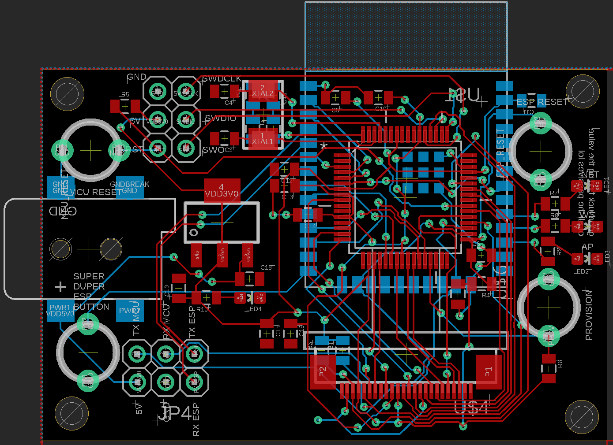

Wireless Webcam
Personal Project
January 2023 - March 2023
January 2023 - March 2023
The responsive webcam project was designed to create a scalable and functional platform capable of capturing images, processing data, and streaming content via a WiFi-enabled web interface. The project involved three main components: hardware design, including a custom PCB; firmware development, transferring data from the camera to the WiFi module; and software implementation for the web-based user interface.
One of the primary challenges tackled was managing real-time data flow from the camera to the ESP32 module while ensuring that the system was robust and efficient. The project required an abundance of low-level programming, PCB layout optimization, and mechanical design for enclosing the hardware securely.
This project demonstrates the the full-stack design hardware, firmware, and web development into a functional system capable of real-time image capture and streaming. By building a modular and optimized webcam system, I explored the intersection of embedded systems, circuit design, and user-facing web technology.
Finished Board
Bare Board
Schematic Prototype for Testing SAM MCU
The heart of the project lies in its custom PCB design, which integrates the microcontroller (ATSAM4S8B), the OV2640 camera module, and the ESP32 for WiFi communication. The PCB was designed in EagleCAD to ensure signal integrity, minimal cross-talk, and efficient power delivery.
Special attention was given to routing high-speed SPI and UART signals between the MCU and the WiFi module. Separate ground planes were utilized to reduce noise, and decoupling capacitors were strategically placed near critical ICs to ensure stable operation. The PCB includes debug headers for USART and SPI communication, allowing real-time monitoring during firmware development.

Figure 1: Fully assembled PCB, highlighting key components such as the MCU, camera interface, and debug headers.
Figure 2: PCB design layout in EagleCAD, showcasing routing and signal integrity optimization.

Figure 3: Schematic capturing connections between the MCU, camera, and WiFi module.
To ensure the hardware's durability and usability, a 3D-printed enclosure was designed in Onshape. The enclosure features precise cutouts for the camera lens, indicator LEDs, and buttons. It also incorporates mounting options to allow the camera to be securely positioned for various use cases.
The enclosure design ensures that all components remain firmly in place, even when subjected to vibrations. Additionally, the enclosure was designed to be lightweight and compact, minimizing material usage while maintaining strength.

Figure 4: Render of the 3D-printed enclosure, designed for secure component housing and accessibility.
The ESP32 module acts as a web server, hosting a responsive interface for streaming captured images. The interface features controls for starting and stopping the stream and provides real-time timestamps for captured frames. The web interface was optimized for both desktop and mobile viewing, ensuring accessibility across platforms.

Figure 5: Web interface for live streaming, showcasing user-friendly controls and timestamped frames.